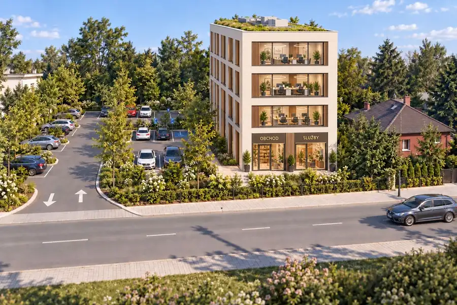
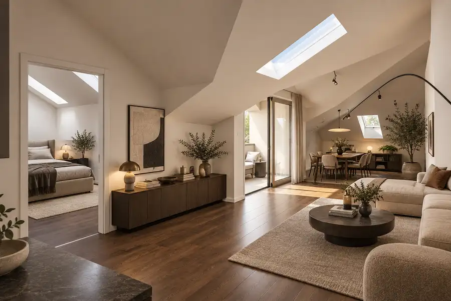
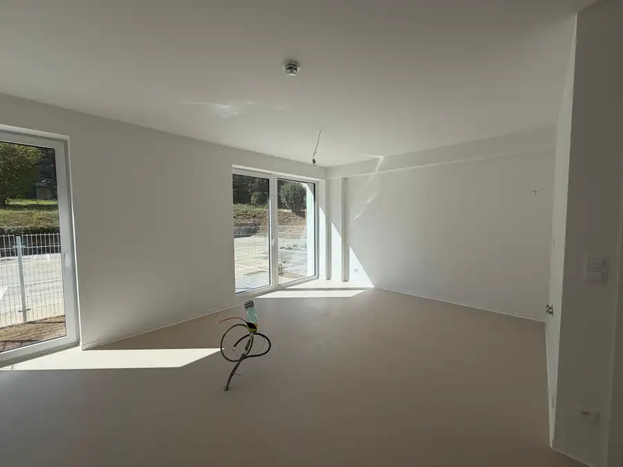

Prenájom 2 izb BYT NOVOSTAVBA Centrum
Banská Bystrica
- Dispozícia2-izbový
- Plocha60 m²
- Poschodie3. z 5
- StavNovostavba
- Energetická triedaA
O nehnuteľnosti
(weiss@equpo.sk, 0905 44 55 66) Ponúkam na prenájom štýlový, moderne zariadený západne oriantovaný 2 izbový byt. Nachádza sa v novostavbe Viladom Bakossova nad Starou Tržnicou. V úplnom centre Banskej Bystrice a zároveň oknami na 3.NP otočený tak, aby ste nemuseli vnímať ruch mesta a užívali si pokoj domova.Prenajíma sa komplet zariadený :Chodba a zádverie :Vstavaný nábytok, práčka so sušičkou, botníkSpáleň :Nová posteľ, nový matrac, komoda, nočné stolíky, svietidláObývacia časť :Gauč, konferenčné stolíky, smart TV, vchod na lodžiuKuchyňa :Komplet vybavené spotrebičmi, tepelná rúra, chladnička, mraznička, varná doska, mikrovlnná rúraV byte sa nachádza vstavaný nábytok na mieru. Samostatná taleta, samostatná štýlová kúpelňa vsadená do skriňových dverí s walk in sprchovým kútom.Byt sa prenajíma minimálne na 1 rok.Byt 750€Energie a správa 100€V cene TV a internet (optika).Garážové parkovacie miesto 50 €(v podzemnej garáži bytového domu)SPOLU 900€Vratná kaucia 900 €Provízia sa neplatí. Nájom sa platí vopred do 15. dňa v mesiaci.Byt voľný od 1.10.2026 alebo dohodou.V prípade ďalších informácií nás neváhajte kontaktovať (weiss@equpo.sk, 0905 44 55 66).
Parametre
| Bezpečnosť | Bezpečnostné dvere |
|---|---|
| Cena vrátane energií | Nie |
| Druh | 2 izbový byt |
| Dátum zverejnenia | 16. 8. 2025 |
| Energetický certifikát budovy | A |
| Energie | 100 |
| Orientácia | Juhozápadná, Západná |
| Podlažie | 3 |
| Počet lodžií | 1 |
| Počet nadzemných podlaží | 5 |
| Počet spální | 1 |
| Rok kolaudácie | 2023 |
| Rok výstavby | 2023 |
| Stav nehnuteľnosti | Novostavba |
| Typ | Prenájom |
| Typ konštrukcie | Železobetónová |
| Umiestnenie | Ďalšie nadzemné podlažie |
| Vybavenie | Lodžia, Garáž, Výťah |
| Vybavenie objektu | Zariadený so spotrebičmi |
| Úžitková plocha | 60 m² |
Kde to je


Mohlo by Vás zaujímať

PozemokNové3 425 000 €Pozemok pri Rooseveltovej nemocnici – 1 785 m² pre občiansku vybavenosť Banská Bystrica 1785 m² Pozemok pri Rooseveltovej nemocnici – 1 785 m² pre občiansku vybavenosť(weiss@equpo.sk, 0905 44 55 66) EQUPO ponúka na predaj pozemok v Banskej…
BytNové10 333 200 €Moderný 3 izb BYT so zimnou záhradou - 2 minúty od Námestia SNP Banská Bystrica 3-izbový81.33 m²3. podlažie (weiss@equpo.sk, 0905 44 55 66) Bývanie priamo v centre Banskej Bystrice, kde máte mesto na dosah, no zároveň dostatok priestoru a súkromia. Ponúkame…
BytNové7 Cena dohodouPREDAJ - 1 izb investičný apartmán s predzáhradkou Banská Bystrica 1-izbový31 m²1. podlažie Apartmán s investičným potenciálom – príďte si ho pozrieť(weiss@equpo.sk, 0905 44 55 66) Hľadáte nehnuteľnosť na prenájom alebo ako dlhodobú…